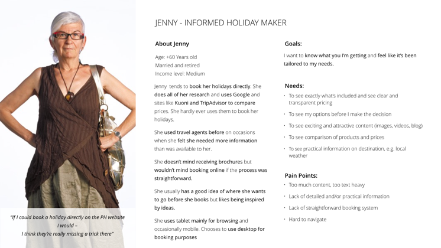
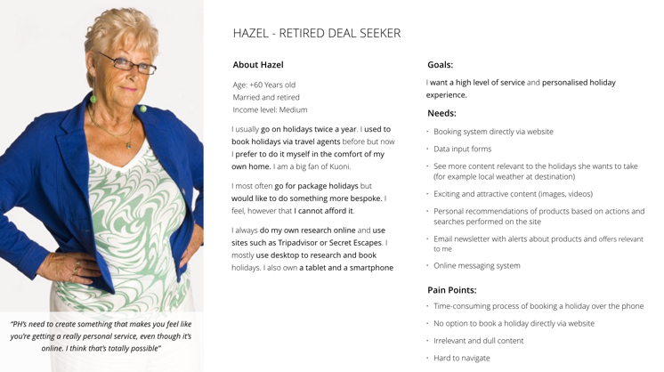

UX Research
Get to know your users first and find out about their needs.
Competitve Analysis
We analysed a number of similar products with services like Folksy, Bespokee or Custom Made being main competitors on the market. We discovered that while both Etsy and thier competitors were alreday offerring custom-made service to their customers in some form, the solution offered wasn't always the most staright-forward or user-friendly.
Stakeholder interviews
The purpose of the survey was to provide the input for the design process and gather quantitative data from the participants. In order to better understand the research data we received, and capture insights and pain points mentioned by the participants we created an Affinity Map. The two key takeaways from the survey were: buyers are afraid to buy custom-made products online and sellers' main challenge is the logistics of the communication process.
Customer interviews
While the survey provided us with quantitave data, in order to further inform our design process we needed qualitative data and the answers to the Why's already established by the user survey. To this end, we interviewed 5 users. These interviews allowed us to get a deeper understanding of the users who will use the feature we were to design.
Personas
The data and information gathered from the survey and user interviews helped us to create our primary personas, i.e. representatives of our target audience segments whose needs and painpoints we wanted to address. We established that our two main groups of users were sellers and buyers of custom-made products.


User journeys & user flows
The data and information gathered from the survey and user interviews helped us to create our primary personas, i.e. representatives of our target audience segments whose needs and painpoints we wanted to address. We established that our two main groups of users were sellers and buyers of custom-made products.


Design Process
Make your goals clear and defined and validate your ideas early on!
Sketches
We started off design process by conducting a Design studio, during which we brainstormed and sketched ideas for the problesm identified duirng reserach phase. We tested those ideas by asking users to complete a task using a paper prototype we created from sketches. We then iterated on the skteches based on feedback received from users at this stage.

Wireframes
Once we were happy with the paper prototype, we proceeded onto digital wireframes. Considering our two different personas we needed to develop two flows: one for buyers and one for sellers. The UX research showed that while buyers were more likely to use a mobile or a tablet, sellers were mostly using laptops. Hence the two flows we developed were based on two different device types to reflect this.